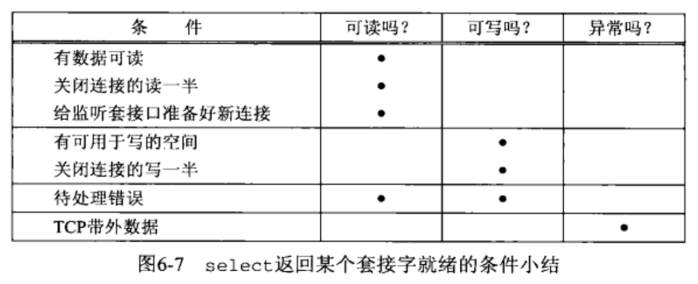
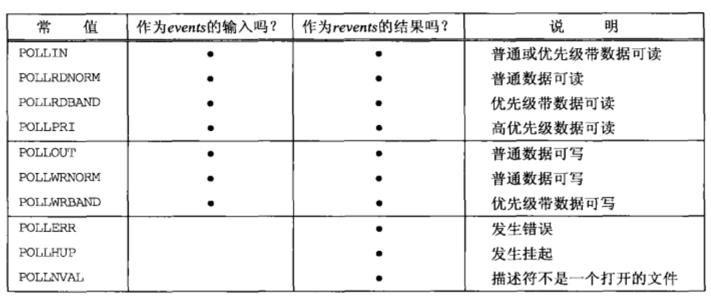
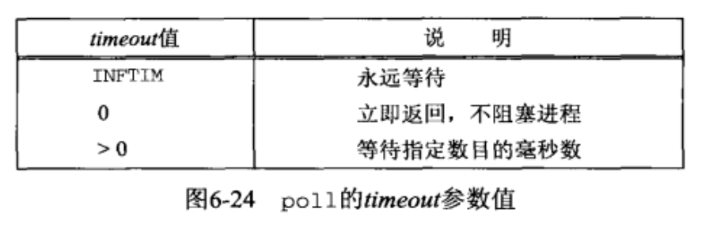

[UNP]:IO复用_select_poll
为什么使用IO复用
在之前的服务器关闭场景中，如果服务器主动关闭，会导致服务器发送
FIN报文段给客户端，但是如果客户此时正阻塞于Fgets(), 即客户正尝试从标准输入中读取数据，那么客户将忽略该FIN报文段，直到其解除阻塞，读取sockfd为止1
2
3
4
5
6
7
8
9
10
11
12
13
14
15
16`#include "unp.h"
void str_cli(FILE *fp, int sockfd)
{
char sendline[MAXLINE], recvline[MAXLINE];
while(Fgets(sendline, NAXLINE, fp) != NULL)
{
Writen(sockfd, sendline, strlen(sendline));
if(Readline(sockfd, recvline, MALINE) == 0)
err_quit("str_cli: server terminated prematurely");
Fputs(recvline, stdout);
}
}在某些情况下，这是无法忍受的, IO多路复用提供了这样一种能力:
可以提前给进程指定多个I/O条件，当这些条件都不满足时，进程阻塞, 当这些条件中的某一个满足时，进程从阻塞中返回
1. select()
select()函数可以在一段指定的时间内，监听用户感兴趣的文件描述符的可读、可写及异常事件，如果没有条件满足，进程将会阻塞在
select()函数
select()
1
2
3
4
5
6#include <sys/select.h>
#include <sys/time.h>
int select(int maxfdp1, fd_set *readset, fd_set *writeset,
fd_set *exceptset,const struct timeval *timeout)
// 返回值：就绪描述符的数目，超时返回0，出错返回-1timeout
告知内核可以等待的最长时间,
timeval的结构如下:timeval
1
2
3
4struct timeval {
long tv_sec; // 秒
long tv_usec; // 微秒
}
timeout的取值有三种可能:NULL
此时如果没有条件满足，进程将用于阻塞下去
timeout.tv_sec != 0 || timeout.tv_sec != 0此时进程会等待一个固定时间，如果到了时间还没有任何条件满足，那么将会返回0
timeout.tv_sec == 0 && timeout.tv_usec == 0此时
select()调用会直接返回，不阻塞，这被称为轮询(poiling)
readset
读描述符集合，当集合中的任意一个描述符满足读条件时，就返回
writeset
写描述符集合，当集合中的任意一个描述符满足写条件时，就返回
exceptset
异常描述符集合，当集合中的任意一个描述符有异常条件待处理时，就返回
描述符集合的数据结构是
fd_set, UNP中没有给出其具体结构，但是给出了其中的一种可能实现:
fd_set是一个整数数组，每一位代表了一个描述符, 假设第一个元素有8位，那么其就可以表示描述符0~7使用以下宏可以对
fd_set结构进行操作:1
2
3
4void FD_ZERO(fd_set *fdset); //清除set的所有位
void FD_SET(int fd, fd_set *fdset); //设置set的第fd位
void FD_CLR(int fd, fd_set *fdset); //清除set的第fd位
int FD_ISSET(int fd, fd_set *fdset); //测试set的第fd为是否被设置这三个参数都是值-结果类型参数，当传入时，表示
select函数会检查哪些描述符，当传出是，fd_set是这样一种结构:若其中的某一位为1，表示该位锁代表的描述符准备就绪，其余为准备就绪的位都会被置为0
maxfdp1
表示待测试的描述符的个数，通常就是传入的
最大描述符 + 1
描述符就绪条件

2. shutdown()
shutdown()函数与close()相似，都是用于关闭网络连接，不过它们之间有着较大差异:
shutdown()可以单向关闭，close()只能双向关闭shutdown()会立即发送FIN,close()只会减少套接字引用计数，等到引用计数为0时才会发送FIN
shutdown()
1
2
3
4#include <sys/socket.h>
int shutdown(int sockfd, int howto);
// 返回：成功 0，失败 -1sockfd
待关闭套接字
howto
指定关闭的方式，有三种取值
SHUT_RD
关闭读取通道，套接字接受缓冲区中的数据都将被丢弃，此后进程不能够再对该套接字调用读函数
SHUT_WR
关闭写入通道，这被称为半关闭，发送缓冲区的数据将被全部发送，紧接着发送FIN报文，进程不能够再对该套接字调用任何写函数
SHUT_RDWR
相当于调用一次SHUT_RD然后调用一次SHUT_WR
3. pselect()
pselect()实现的功能为：在被调用时，先以给定信号集合作为当前的信号掩码，在调用完成时，再将信号掩码恢复
pselect()
1
2
3
4
5
6#include <sys/select.h>
#include <signal.h>
#include <time.h>
int pselect(int maxfdp1, fd_set *readset, fd_set *writeset,
fd_set *execptset, const struct timespec *timeout,const sigset_t *sigmask)
// 返回值：就绪描述符的数目，超时返回0，出错返回-1maxfdp1
最大描述符 + 1
readset, writeset, execptset
读，写，异常描述符集合
timeout
超时事件
sigmask
调用
pselect()时设置的的掩码
4. poll()
poll()提供的功能与select()类似，但是在处理流设备时，能够提供额外的信息
poll
1
2
3#include <poll.h>
int poll(struct pollfd *fdarray, unsigned long nfds, int timeout);
// 返回值：就绪描述符的数目，超时返回0，出错返回-1fdarray
描述符数组，每一个条目都是一个
pollfd结构pollfd
1
2
3
4
5struct pollfd{
int fd; /* 确认描述符 */
short events /* 测试条件 */
short revents /* 返回状态 */
}events与revents分别是测试条件与返回的状态- 在
select()当中，使用读，写，异常将描述符集合分类，如果描述符满足了相应条件，就将set当中指定的位数置为1 - 而在
poll()当中，则是给每个描述符一个测试条件，用于表示读，写，异常这些类型，当从poll()调用中返回时，从revents的值可以看出这些描述符的返回状态
- 在
events与revents取值表

poll()为流设备提供了额外信息，体现在上面的数据类型上，poll()可以识别三类数据:
- 普通
- 优先级带
- 高优先级
timeout
超时时间， 可取值如下

注: poll()函数会忽略fd < 0的描述符
本博客所有文章除特别声明外，均采用 CC BY-SA 4.0 协议 ，转载请注明出处！